La plupart des champignons possèdent des lamelles sous leur chapeau. Les lamelles sont pleins de petits feuillets ( qui ressemblent à des petittes lames ) qui sont également accrochés sous le chapeau. En général les champignons à lamelles ne sont pas bons. Mais il en existe tout de même. Mais certains sont constitués de nombreux pores et non de lamelles. Les pores sont des petits, voir des miniscules, trous qui sont raccrochés au chapeau. Les champignons à pores sont la plupart du temps comestibles. Mais attention ! Il y a des exceptions. Il existe d'autres champignons qui n'ont ni lamelles et ni pores. Mais il en existe très peu.
* Exemple de champignons à pores : ( cliquez sur une des images pour l'afficher en plus grand dans une nouvelle page ) 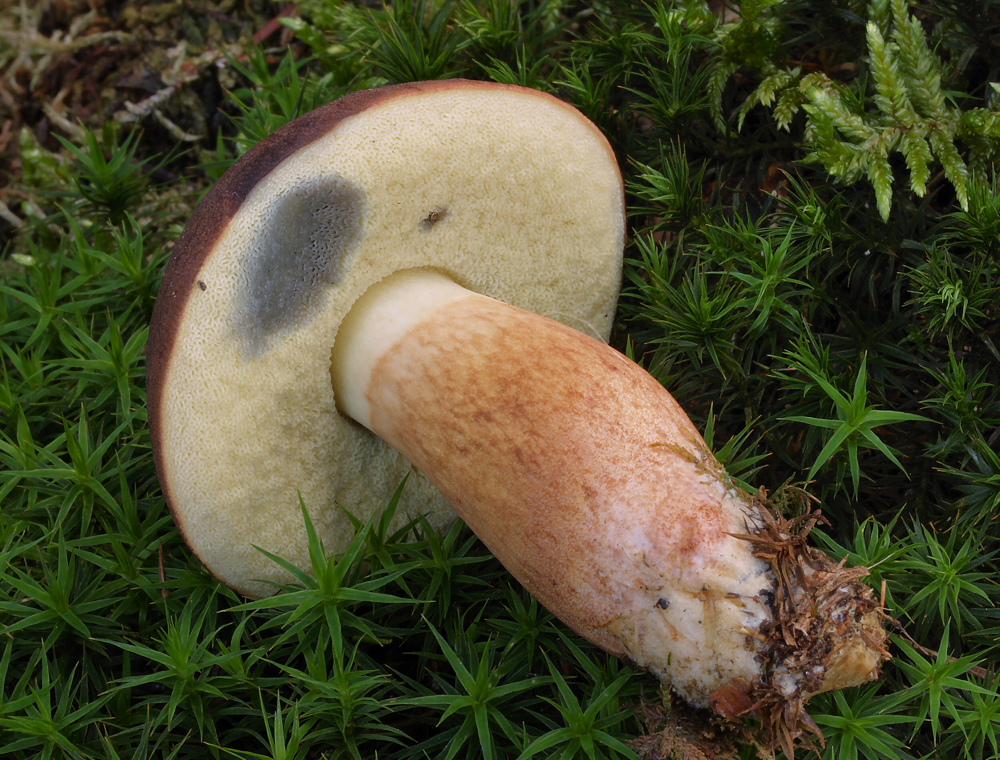 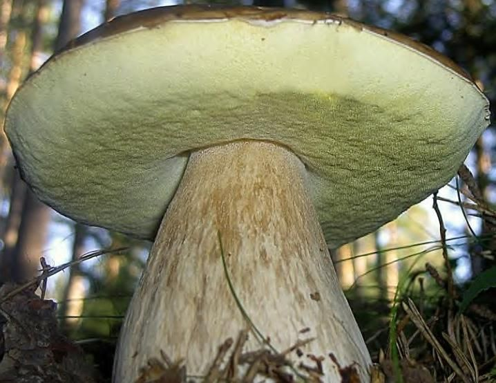 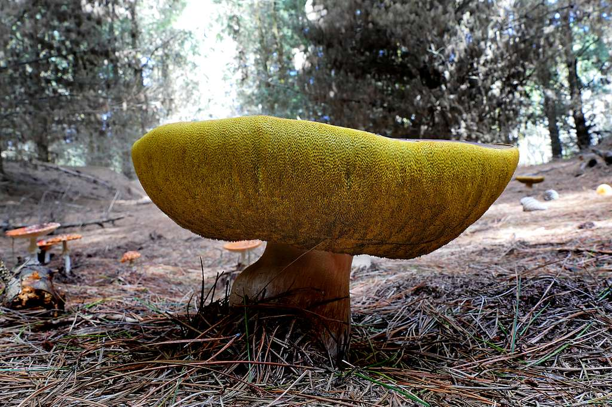 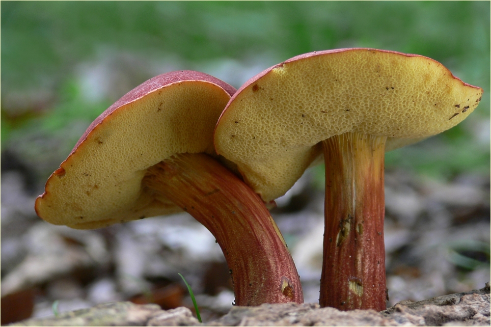
* Exemple de champignons à lamelles :( cliquez sur une des images pour l'afficher en plus grand dans une nouvelle page ) 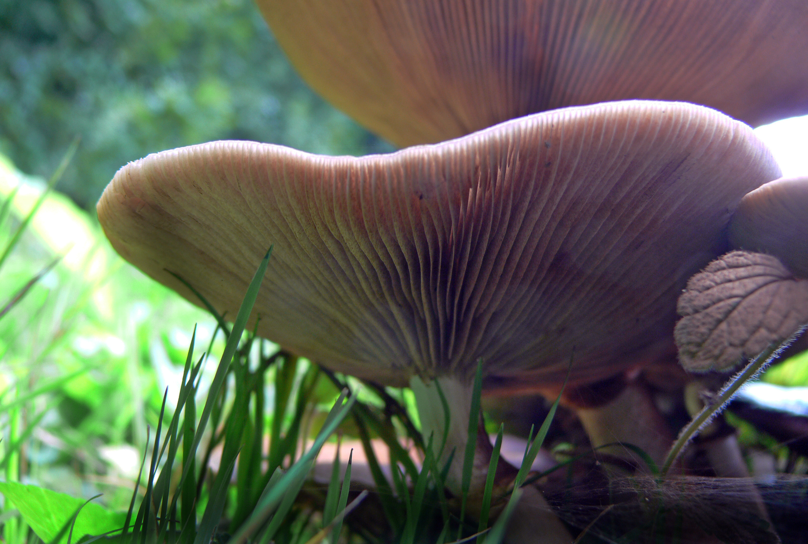 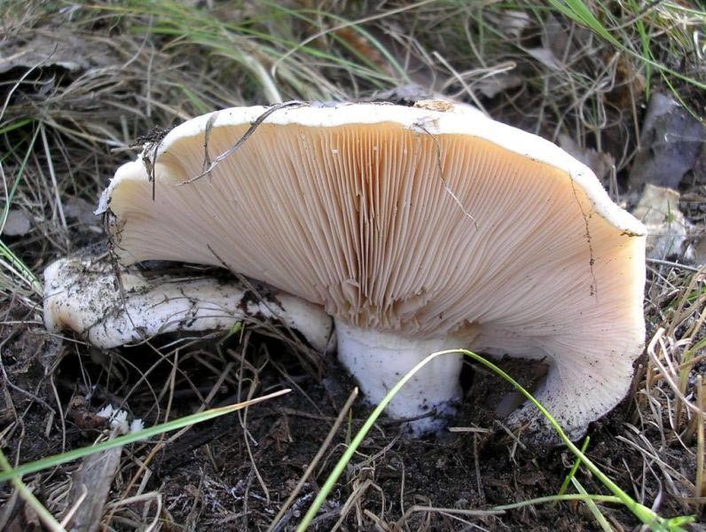 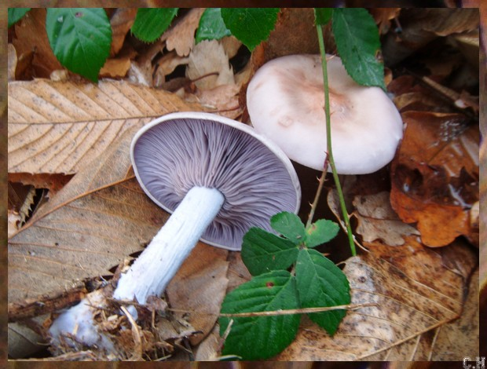 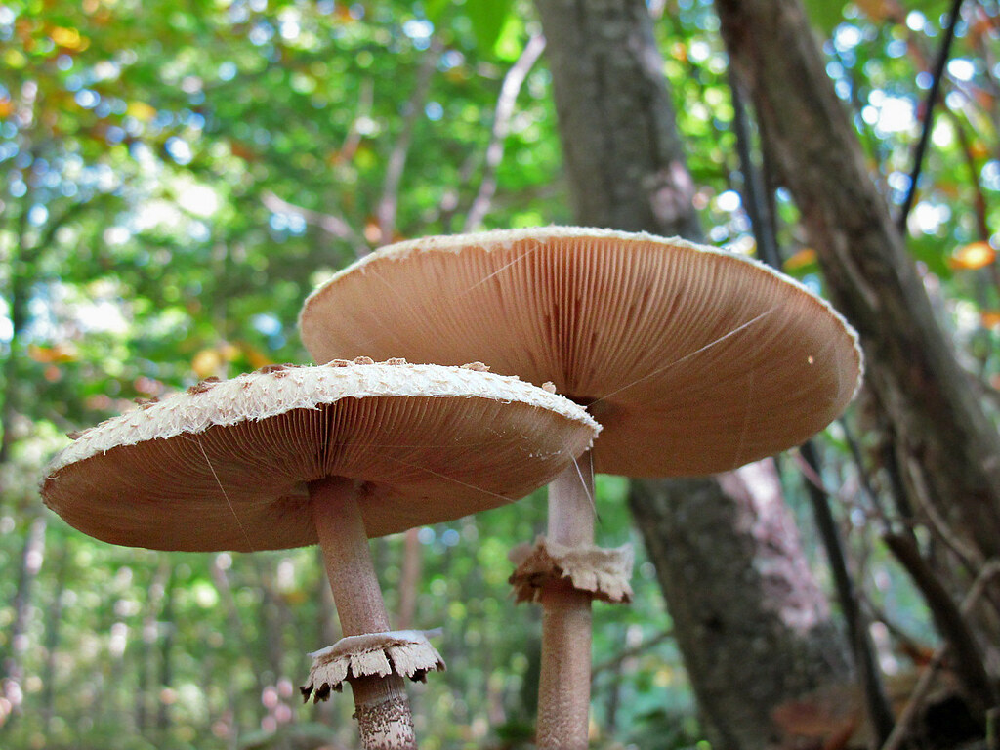
* Exemple de champignons n'ayant ni lamelle ni pores : ( cliquez sur une des images pour l'ouvrir dans une nouvelle page ) : 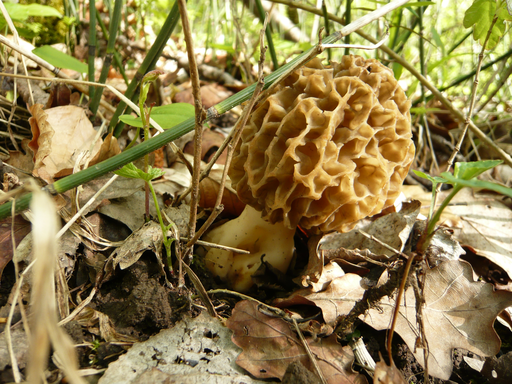 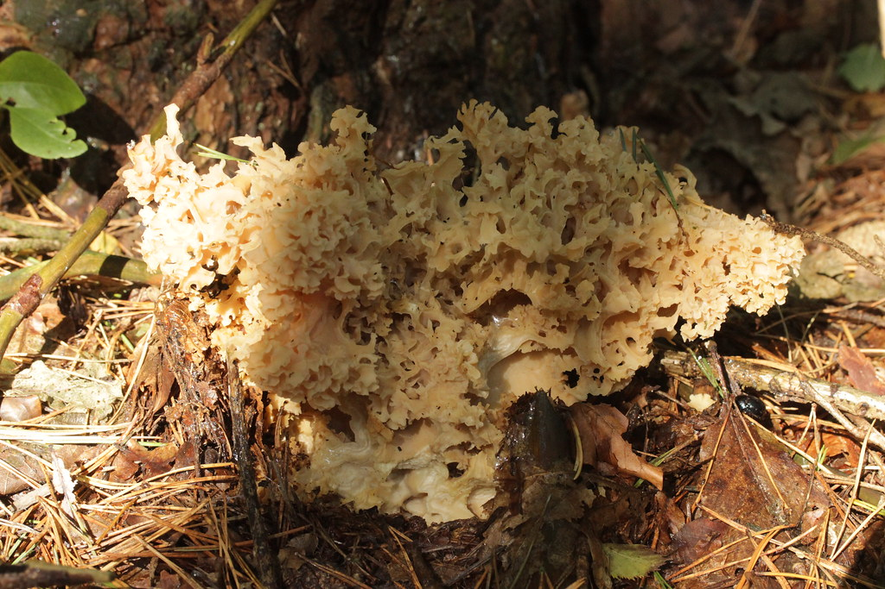 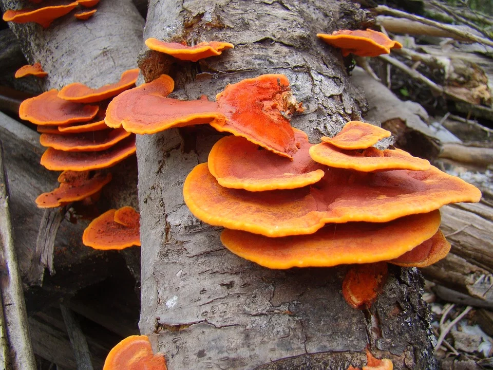 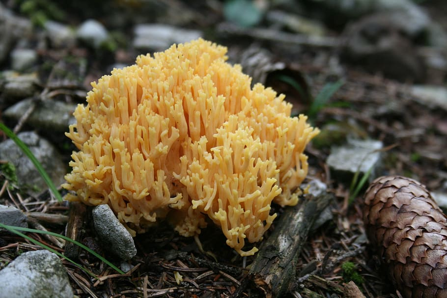
Vous trouverez ci-dessous une photo des champignons à pores comestibles les plus courants. Cliquez sur la photo si le champignon ressemble à celui que vous avez trouvé ou à celui au quel vous vous intéressez. En cliquant dessus vous aurez plus de renseignements sur le champignon.
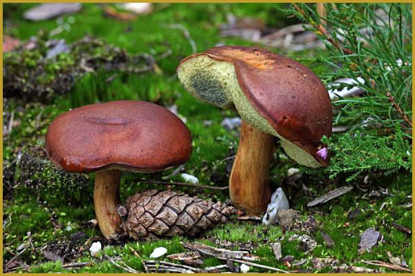